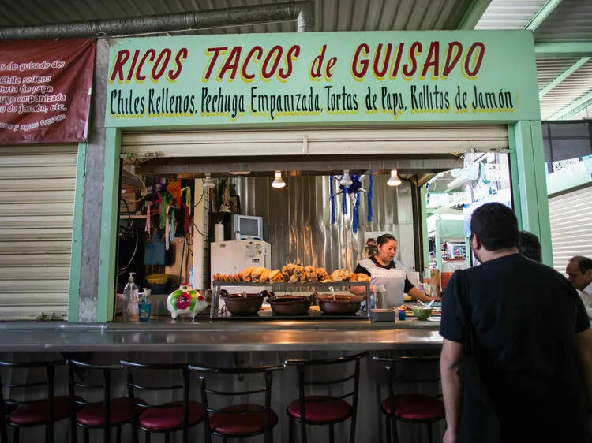

Nosotros
La Taquería señor taco es un negocio familiar fundado en 2010 en Tuxtla Gutiérrez. Nos especializamos en tacos tradicionales mexicanos preparados con ingredientes frescos y recetas caseras transmitidas por generaciones.
Misión
Ofrecer comida mexicana auténtica con calidad, higiene y excelente servicio.
Visión
Ser la taquería favorita de la región por nuestro sabor y tradición.
Nuestros productos

Tacos al pastor
Carne marinada, piña, cilantro y cebolla.
$15

Tacos de asada
Carne asada, guacamole, cilantro y cebolla.
$18
Galería
Contacto
Dirección: novena sur, Tuxtla Gutiérrez, Chiapas
Teléfono: 961 196 7010
Correo: elseñortaco@taco.com
Propietario: diego vazquez